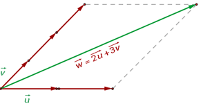
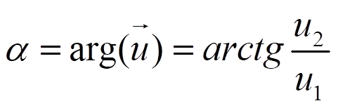

Se dice que un vector w es combinación linear de otros vectores, u1,u2,…,un, si existen k1,k2,…,knЄR, tales que:
w = k1u1 + k2u2 +….+ knun
Ejemplo:

Un conjunto de vectores se dice que es linealmente dependiente si alguno de ellos es combinación lineal de los otros. En caso contrario, se dice que el conjunto es linealmente independiente.
En el plano, dos vectores son linealmente dependientes si y solo si son proporcionales.
En el ejemplo anterior u, v y w son linealmente dependientes.
Un conjunto de vectores se llama sistema generador si todos los vectores se pueden expresar como combinación lineal de los del conjunto.
Una base es conjunto de vectores que es sistema generador y linealmente independiente. Si los vectores son ortogonales y tienen módulo 1 (vectores unitarios), se dice que es una base ortonormal.
El número de vectores en cualquier base del espacio en el que estemos trabajando se llama dimensión del espacio. Nosotros vamos trabajar en este curso en R2, el plano real, que tiene dimensión 2.
Sea B={v1,v2} una base. Como cada vector se puede expresar de forma única como combinación lineal de los elementos de la base, w = λ1v1 + λ2v2, a esos números se les llama coordenadas del vector en esa base: w = (v1,v2).
Nosotros vamos a trabajar con las coordenadas en la base canónica de R2, Bc={i,j}
Entonces, en coordenadas, si
- Módulo del vector:
- Argumento del vector:

- Suma y resta de vectores:
- Producto por un escalar:
- Producto escalar:
Ejercicios
1.- Sean u(3,-1) y v(2,2), calcula:
a) |u| y |v|
b) arg u y arg v
c) u+v y u-v
d) 3u y -2v
e) u·v
soluciones: a) √10u y √8u; b) -18o26'6'' y 45o; c) (5,1 ) y (1,-3); d) (9,-3) y (-4,-4); e) 4